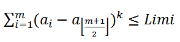

BZPRO
#4667. 小y的密码
内存限制：512 MiB
时间限制：10 Sec
提交
提交记录
讨论
题目描述
废话不多说，反正小y高考屠场啦！！
然而我们知道，高考报志愿系统是需要密码的，而小y根本没有在意自己的密码，为了挑战人生，他决定自己把密码找出来。
不知道为什么，小y认为自己的密码是一个大小不超过n的正整数，且满足一个奇怪的性质。
设这个正整数各个数位上的数字按数值大小从小到大依次为a_1,a_2,…,a_m，那么就有

其中k和Limi是给定的常数。现在给定n、k、Limi，求有多少种可能的密码。
输入格式
一行三个非负整数n、k、Limi，用一个空格隔开
n<=10^9，k<=10, Limi<=2*10^9
输出格式
一行一个整数表示符合条件的不同密码数量。
样例
样例输入
100000 0 5
样例输出
99999
数据范围与提示